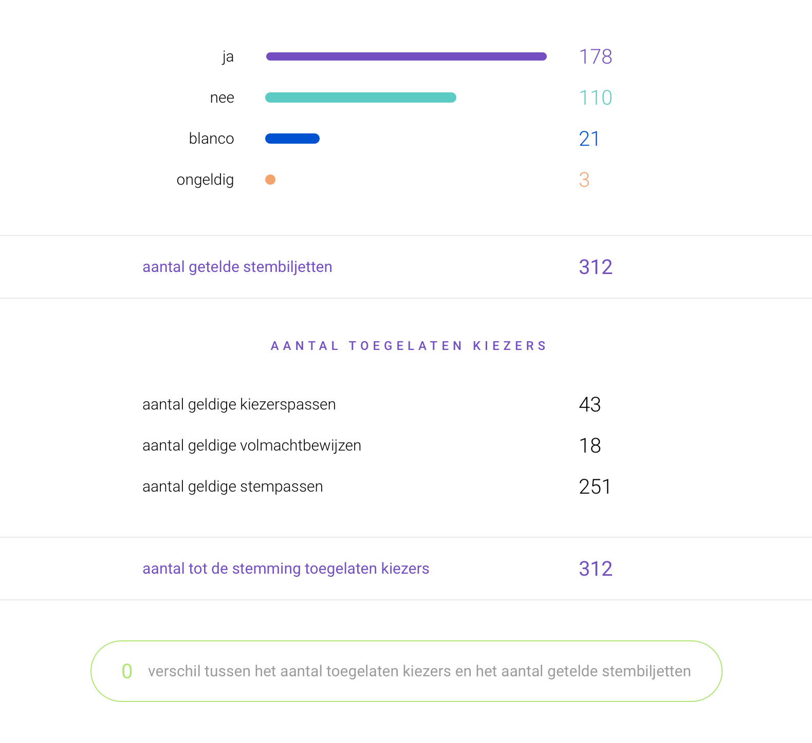

Verkiezingsuitslag
Select a Polling Station if you would like to see local results:
yes
178
no
110
blank
21
invalid
3
Admitted voters
collected voter passes
43
collected power of attorneys
18
collected polling cards
251
Registered votes
polling cards
251
power of attorneys
18
objections to pilot
3
voter passes
40
De Pilot

De Pilot
Contact
Heeft u een onbeantwoorde vraag of wilt u ons feedback geven?
Laat een bericht achter en we komen zo spoedig mogelijk bij u terug.